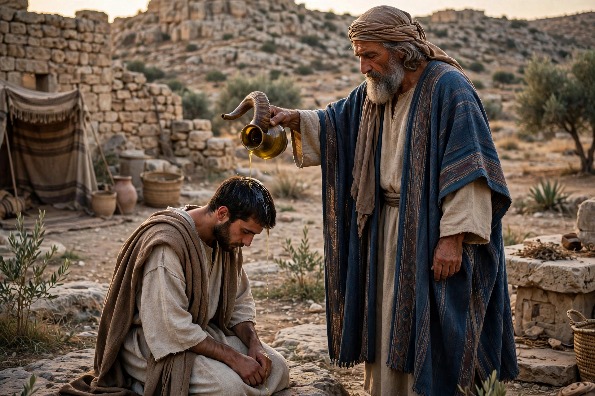

Anointing is the ritual act of pouring aromatic oil over a person's head or entire body. In religious practice it signifies the introduction of a divine or holy influence, the consecration of a person or object, or healing. The practice is attested in the ancient Near East and is central to Judaism and Christianity, from which derive the titles Messiah (Hebrew: "anointed one") and Christ (Greek: "anointed one").
In ancient Israel, anointing with specially prepared holy oil consecrated priests (beginning with Aaron), prophets, and kings. Samuel anointed both Saul and David as kings of Israel. Objects in the Tabernacle, including the altar and vessels, were also anointed to sanctify them. The holy anointing oil of Exodus 30 was compounded of myrrh, cinnamon, cane, cassia, and olive oil, and its profane imitation was forbidden.
In the New Testament, Jesus is anointed by a woman at Bethany, and the Epistle of James instructs elders to anoint the sick with oil. Christian practice developed several forms of anointing:
In Pentecostal and charismatic Christianity, "the anointing" also refers metaphorically to the empowering presence of the Holy Spirit.
Anointing with oil, water, or other substances appears in Hindu practice (abhisheka, the ritual bathing of deities), in ancient Egyptian cult, and in various folk and ceremonial contexts. In everyday ancient life anointing with scented oil was also a mark of hospitality and festivity.